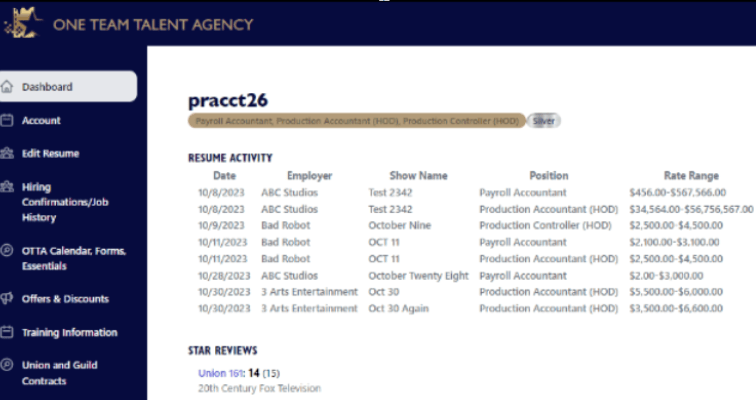

***WELCOME TO YOUR MEMBER DASHBOARD***
The Member Dashboard serves several key purposes, providing Members with a centralized and intuitive
interface designed to enhance your user experience and offers a suite of features to enhance your job
search:
- Centralized Information Display: Quickly access all your important information without navigating through multiple pages.
- Real-Time Data Monitoring: Stay updated with real-time or near-real-time updates on your status and key tasks
- Improved Efficiency: Streamline your job search with quick access to frequently used tools and features.
- Performance Tracking: Track your progress towards goals, monitor your job search status, and update your availability dates easily.
- Alert & Notification Management: Receive alerts and notifications about actions that require your attention.
- Integration of Multiple Data Sources: Get an efficient overview with data pulled from various sources within the OTTA system.
- Accessibility to OTTA’s Calendars, Forms & Essentials: Enjoy enhanced collaboration with a shared forms & templates and other useful information.
Explore your OTTA dashboard and make the most of its powerful features!
This is an example of a NEW MEMBER Dashboard:

This is an example of what a member dashboard could look like after the resume has been included in the results of a few job requests.

The Member Dashboard streamlines communication with OTTA on availability and work status. All Team Members, whether working or not, must update their "Current Status" six weeks before becoming available again, members receive a reminder to review and update their dates. Resumes circulate in response to matching Employer's Job Requests.
After completing a show commitment, Employers can commend a member's performance. Star Reviews are accessible in the Dashboard, allowing members to view and respond to missing ratings. These reviews are included with OTTA Resumes, offering members the ability to link performance to compensation.